| Algumas informações | |
|---|---|
| Bandeira |  |
| Capital | Roma | Habitantes | 59,11 Milhões |
| Hino Nacional | Il canto degli Italiani |
| Língua Oficial | Italiano |
| Moeda | Euro (€) |
| Mapa Topográfico | 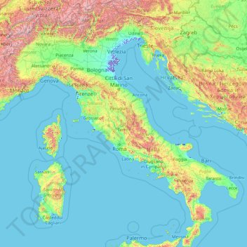 |
| Cidades mais populadas |
|
| Principais atividades económicas |
|
Índice
História
A história da Itália é rica e complexa, remontando a milhares de anos. A região foi habitada por diversas tribos pré-romanas, como os etruscos e os gregos, e foi posteriormente conquistada pelos romanos, que estabeleceram uma das maiores civilizações da história.
Após a queda do Império Romano, a Itália foi invadida por vários povos, como os visigodos, os ostrogodos e os lombardos, que estabeleceram diversos reinos e estados na região. Durante a Idade Média, a Itália se tornou o centro da cultura e do comércio europeu, com as cidades-estado de Veneza, Florença e Gênova se destacando como importantes centros comerciais.
No final do século XIX, a Itália foi unificada em um único país, após um longo processo de lutas políticas e guerras. Durante a Segunda Guerra Mundial, a Itália ficou sob o domínio do regime fascista liderado por Benito Mussolini, mas foi libertada pelas forças aliadas em 1945.
Desde então, a Itália se tornou uma das maiores economias do mundo, com uma rica cultura que engloba arte, literatura, culinária e moda, além de ter um papel importante na política internacional e na União Europeia.
Monumentos
- Coliseu (Roma)
- 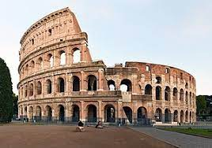
- Fontana di Trevi (Roma)
- 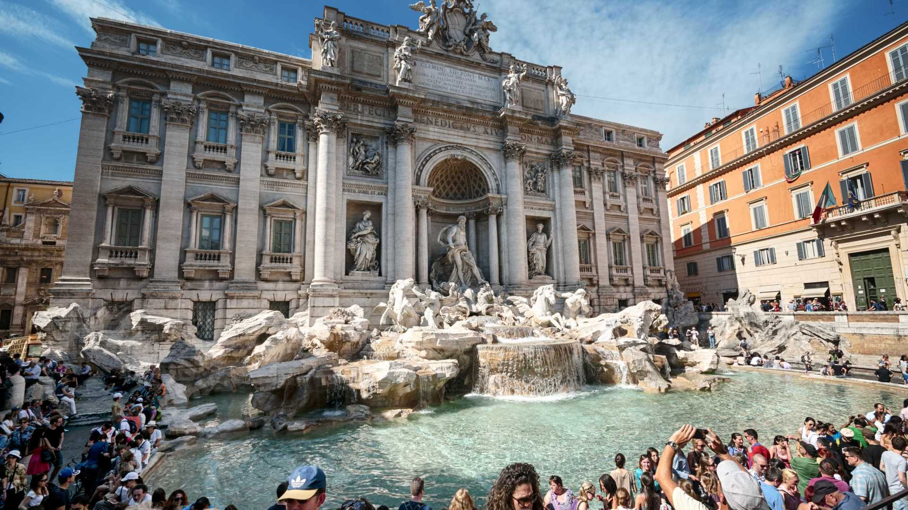
- Basílica de São Pedro (Cidade do Vaticano)

- Panteão de Roma (Roma)
- 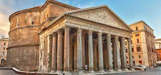
- Torre de Pisa (Pisa)

- Duomo di Milano (Milão)
- 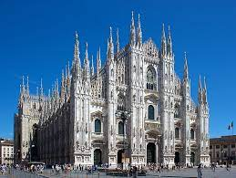
Futebol
O futebol italiano é uma das ligas mais icônicas e competitivas do mundo, conhecida por seu estilo tático e defensivo, bem como pelas suas rivalidades acirradas e clubes históricos. Com um total de 20 equipes, a Série A é a principal divisão do futebol italiano, e conta com alguns dos maiores clubes do mundo, como Juventus, Milan e Internazionale.
O futebol italiano tem uma longa e rica história, tendo sido fundado em 1898 e tendo testemunhado muitas lendas do futebol italiano, como Giuseppe Meazza, Paolo Rossi, Franco Baresi , Roberto Baggio,Andrea Pirlo , Paolo Maldini , Del Piero , Francesco Totti. O estilo tático italiano é conhecido por sua ênfase na defesa, com muitos times adotando uma abordagem de jogo cautelosa e estratégica, o que muitas vezes resulta em jogos com poucos gols e partidas equilibradas.
As rivalidades no futebol italiano são lendárias, com alguns dos maiores clássicos do mundo sendo jogados entre clubes italianos. O Derby della Madonnina, entre Milan e Internazionale, é um dos mais famosos, assim como o Derby della Capitale, entre Roma e Lazio. Outra rivalidade notável é entre a Juventus e o Torino, com o clássico conhecido como Derby della Mole.
A Juventus é a equipa mais bem-sucedida na história da Série A italiana, com 36 títulos no total. No entanto, a liga tem visto uma grande competição nos últimos anos, com clubes como Nápoles, Roma, Lazio , Milan e Inter desafiando a supremacia da Juventus.
Celebridades Futebolisticas
| Nome | História | Fotografia |
|---|---|---|
| Paolo Maldini | Paolo Maldini destacou-se como Defesa central Considerado por muitos o melhor defesa da história da Itália.
Paolo venceu 7 títulos de Série A, 5 Ligas dos Campeões, uma Coppa Italia, um Mundial de Clubes e 5 Super Taças da UEFA. |
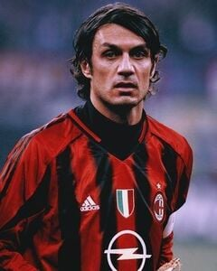 |
| Roberto Baggio | Roberto Baggio foi um médio ofensivo de qualidade invejável que representou clubes como Fiorentina e Juventus.
Baggio venceu uma Bola de Ouro em 1993. |
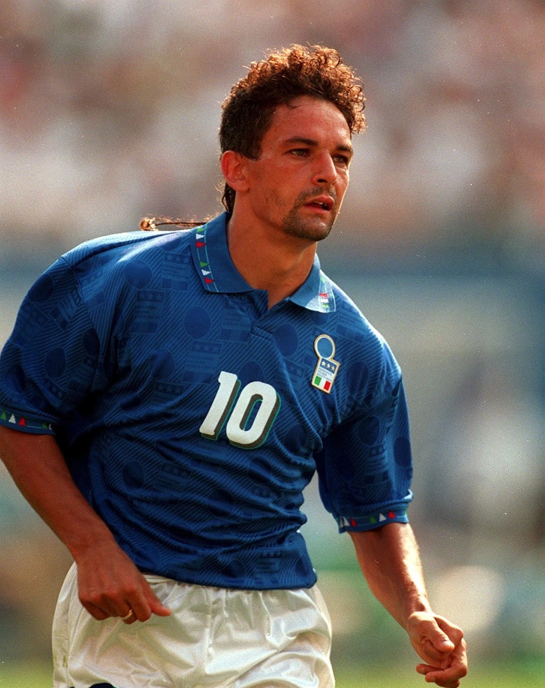 |
| Gianluigi Buffon | Buffon é Considerado um dos melhores Guarda-Redes de todos os tempos do futebol Mundial.Com passagens pelo Parma e Juventus(20 anos) e PSG, o guarda redes completou mais de 1127 jogos oficiais. | 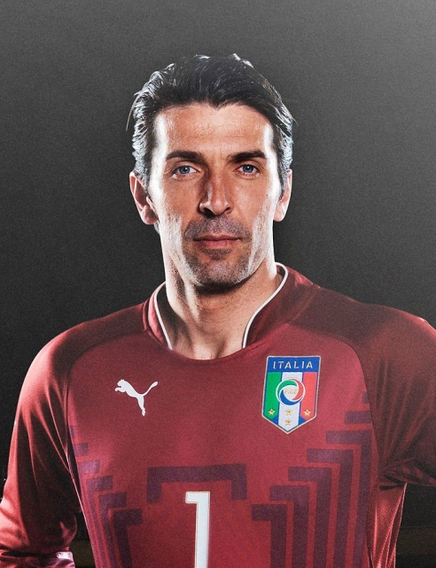 |
| Giuseppe Meazza | Giuseppe Meazza venceu dois Mundiais ao Serviço da seleção nerazzurri.É o segundo maior artilheiro de todos os tempos da Itália. |  |
| Francesco Totti | Francesco Totti é conhecido pela sua fieldade ao seu clube do coração , Roma . Realizou 763 Jogos pela Roma marcando 306 Golos.
O Jogador também se tornou Campeão mundial pela seleção italiana em 2006. |
Clima
Localizada numa península, a Itália encontra-se cercada pelo mar, o que lhe garante um clima mediterrâneo em diversas partes do país. O terreno geográfico é bastante diversificado, basta viajar de norte a sul para encontrar praias paradisíacas, montanhas e Alpes incríveis a poucas horas de distância um do outro, e com climas muito diferentes .
É caracterizada por ter verões quentes e secos, podendo chegar até temperaturas médias de 30 graus Celsius no sul. E invernos suaves e húmidos, podendo nevar nas áreas montanhosas do norte, enquanto as regiões costeiras normlamente permanecem mais temperadas.
Gastronomia Italiana
| Pizza |  |
| Ravioli | 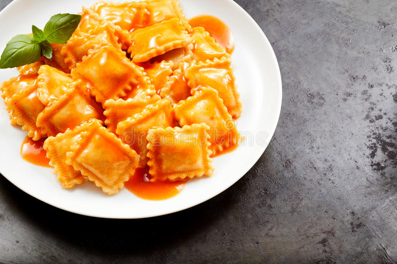 | Risotto | 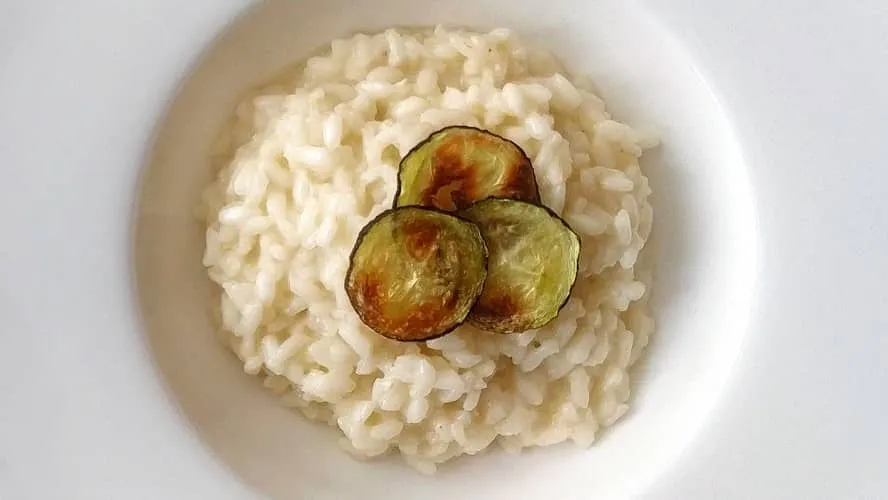 |
| Panetone | 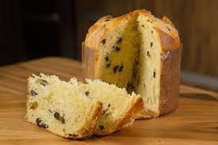 |
| Tagliatelle Carbonara | 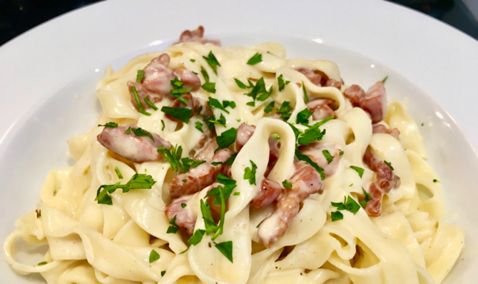 |
| Gnocchi |  |
| Lasagna | 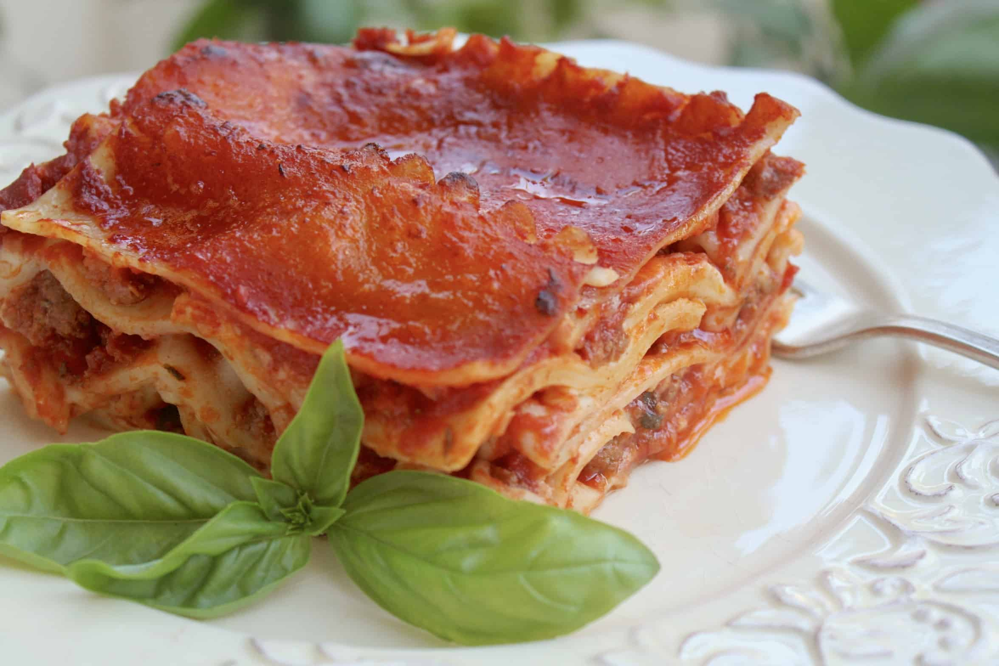 |
| Arancino | 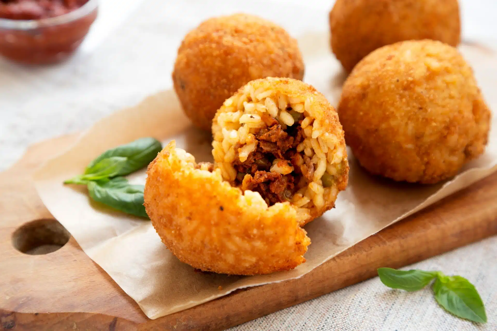 |